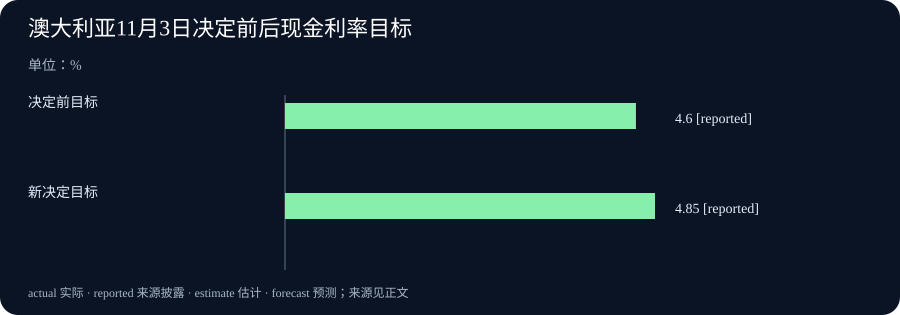

Daily Intelligence · 2026-11-04
信息边界：新闻研究截止于北京时间 2026 年 11 月 4 日 07:00:32，优先窗口为此前 24 小时，即 11 月 3 日 07:00:32 起。四条主线的一手原文均标注 11 月 3 日；本期没有足够证据独立核实所有来源的首次公开小时，保留日期粒度，不声称严格 24 小时全部已证实。研究、版本功能、季度财务结果与政策决定分别按其所属时期说明。
Today's Thesis
人工智能（AI）正进入实物设计和软件修复，更重要的问题随之变成：新方案解决了什么，又保住了哪些原有要求。企业财报与利率决定也提醒我们，局部改善可以与账面损失、成本压力同时存在，判断进展需要保留这些反例。
Executive Summary
OpenAI 披露模型参与机械、电路与软件设计的进展，展示内部设备试验，并宣布与马自达开展新研究合作。原型已经做出，但生产限制、零件允许的误差与装配细节仍需要多轮复核。一个较新的内部模型在指定工程测试上得分更高，也不能视为已公开交付的新产品。
Future AGI 的新版本为代理修复加入用户指定的“必须继续通过”案例。代理在这里是会调用工具执行任务的软件；修复失败案例时，还要检查原本正常的任务有没有被破坏。这是测试与交付方式的增量，没有证明所有修复都可靠。
澳大利亚储备银行把现金利率目标提高 0.25 个百分点至 4.85%。支付技术公司 Fiserv 则披露第三季度会计亏损与调整后盈利并存，其中一项重大原因是非现金商誉减值。相对于最近两期，本期新增的是工程研究与合作、修复工具的新版本、澳大利亚本次加息及新的季度财报，没有把模型输出预算、电网计划或贸易旧消息重新计入。
AI Daily
1. OpenAI 展示工程设计进展，原型之后仍有制造复核
OpenAI 11 月 3 日公布机械、电气及系统设计工作的进展。公司描述了一次内部试验：模型参与定义设备要求、设计外壳、电路板和软件连接；两名成员利用业余项目时间，不到一周完成设计，小批原型随后由合同制造商制作。原文同时承认，准备生产仍经过数轮审阅和修改，模型没有稳定考虑制造条件、允许误差和装配细节。原始研究说明
公司还宣布与马自达开展新研究合作，探索利用气流及结构模拟评估车辆设计。模拟是用计算方法研究设计在规定条件下的表现，不等于完成实体碰撞测试或车辆量产。新合作与内部试验属于同一篇新披露的不同证据，本期合为一条主线，不重复计数。
在 BenchCAD 2.0 工程测试中，公司披露较新内部模型的平均分为 0.875，GPT-6 Astra 在最高推理设置下为 0.594。测试涉及重建三维零件、装配体及识别电路连接。它提供了指定任务上的比较，不能直接换算成工厂成本、研发速度或可量产比例；内部模型的成绩也不是新模型已对所有用户开放的公告。
2. Future AGI 改进修复流程，把原有成功案例纳入验收
Future AGI 是帮助团队测试、分析和改进 AI 应用的软件。官方 11 月 3 日的 v1.58.0 版本记录新增修复失败任务的功能，并允许指定必须继续通过的测试案例。它针对一个常见问题：修好了眼前错误，却让过去正常的任务出错。版本还记录了最终检查和交付候选文件方面的修正，属于实际功能变化。官方版本记录
相关开发说明解释，用户选择的保护案例要属于本次运行，并与待修复目标分开。也就是说，一组用来检查问题有没有解决，另一组用来检查原有行为有没有保住。这类复查通常称为回归测试，作用是发现修改带来的新问题。开发讨论早于本次版本，今天的增量是功能进入 1.58.0 发布记录，不能把每条旧讨论再算作当天新闻。功能设计说明
边界同样需要看见：版本记录还允许带理由交付被“必须通过”检查否决的候选，因此不能只看到“已交付”就推断全部测试合格。读者应查看失败项、原因与最终采纳决定。这里的候选是可审阅的修改结果，不等于生产系统已经自动更新。本期没有测试软件，也不据功能名称推算错误率下降多少。版本页只核实到 11 月 3 日发布日期，可见小时缺少独立时区依据。
Business Daily
1. Fiserv 同时披露亏损和调整后盈利，关键在各自计入了什么
为商户和银行提供支付及金融软件服务的 Fiserv，于 11 月 3 日披露第三季度结果。按美国通用会计准则（GAAP）计算，季度收入为 52 亿美元，同比下降 1%；每股亏损 11.17 美元。公司同时披露，调整后每股盈利为 1.75 美元。每股数字是把相应损益分摊到股份后的指标，并不是每位股东实际收到的现金。公司原始财报
两种结果差别很大，一个重要原因是本季确认约 64.5 亿美元的非现金商誉减值。商誉通常来自过去收购时，支付价格超过可辨认净资产价值的部分；减值表示下调这项账面价值。“非现金”说明确认这笔损失本身不代表当季又付出同额现金，不能进一步解释成过去收购没有成本、这项损失不重要，或公司账上现金没有变化。
公司提高了一项节支计划的预期目标，并维持全年展望。这些属于未来估计，不是本期已实现的节省，也不能仅凭管理层提到 AI 就认定收益来自 AI。会计结果、调整口径与未来目标应一起阅读，既不能只挑盈利数字，也不能把一次账面减值直接当作现金流出。
2. 澳大利亚加息，央行仍担心通胀持续
澳大利亚储备银行（Reserve Bank of Australia，简称 RBA）11 月 3 日决定，把现金利率目标从 4.60%提高到 4.85%，上调 25 个基点。一个基点等于 0.01 个百分点，所以本次是提高 0.25 个百分点。现金利率目标针对隔夜资金市场，是货币政策的基准之一，不等于每笔住房贷款或存款利率。央行正式决定
央行认为通胀仍广泛存在，上调了预测，并指出能源价格、国内供应能力与 AI 相关投资带来的部分科技商品价格压力。它预计通胀回到 2%—3%目标区间上沿要等到 2027 年末；这是预测时间，没有提前成为已实现结果。此次表决为六人支持加息、三人支持维持，不能写成一致同意。
央行同时承认经济正在放缓，并继续评估增长、就业与物价风险。对普通读者，这意味着技术投资较强与融资更贵可以同时发生。企业或家庭具体承担多少变化，仍取决于合同、利率重定价时间和银行决定，不能用政策目标的变动直接计算所有人的月供。
Macro Observation
今天的经营与政策信息呈现两个不同层次。Fiserv 反映一家公司的收入和资产估值；澳大利亚利率决定反映央行对整个经济的需求、供给和物价风险作出的判断。公司减值不能代表全球支付需求，澳大利亚加息也不能直接说明每家科技企业都缺资金。
更值得追踪的联系是，技术能力、资本投入与盈利兑现并不总在同一个时间发生。设计工具可以更快准备方案，但试制、验收和融资仍需要资源；一家公司可以继续推出产品，同时确认过去收购价值下降。这里是经营机制的分析，不是声称今天的新研究造成了本季亏损或本次加息。
Signal Dashboard
| 主线 | 新披露能支持的判断 | 还需要什么证据 |
|---|---|---|
| AI 工程设计 | 已出现内部原型、指定测试比较与新合作 | 制造复核、外部验证及实际交付记录 |
| 代理修复 | 新版本能指定需要保留的通过案例 | 最终检查结果、失败项与采纳理由 |
| Fiserv 财报 | 会计亏损与调整后盈利采用不同口径 | 损益调节表、后续经营与现金资料 |
| 澳大利亚加息 | 央行提高政策目标并上调通胀判断 | 后续实际物价、就业及利率传导 |
表中的研究分数、软件状态、每股损益和政策利率各有含义，不能相加成一种行业景气评分。
Deep Insight
一项改进，怎样避免遮住另一项退步
今天的 AI 消息把验收问题推得更具体。过去，很多演示只需要回答“模型能不能生成一个方案”；进入实物和连续任务之后，还必须问“方案是否满足其他要求”。这不是给新功能追加无穷无尽的门槛，而是明确用户原本就依赖的条件。一个设计看上去完成了，与它能在规定材料、尺寸和加工方式下做出来，是前后相连却不同的两步。
工程任务尤其容易让人被可见成果吸引。三维外形、完整电路图和可以操作的界面，都能让方案显得成熟；实际装配却可能被一个连接位置或尺寸误差影响。假设两个零件单独看都正确，连接后却没有足够空间放入工具，整套设计仍需修改。这个例子只解释制造复核的作用，不是在描述本次原型出现了某个具体缺陷。模拟与实体试验也各自覆盖部分问题，不能用一种通过结果替另一种作保证。
软件修复面对的是相似但可更早记录的困难。假设客服代理把退款条件回答错了，修正之后，仍要确认查订单、说明保修等原有任务没有退步。原本失败的案例和必须保留的案例，回答的是两个问题。只有前者改善，不能推出整个应用更可靠；后者仍通过，也不能证明未知任务都会正确。更有用的报告应保留测试选择、修改范围与失败记录，让使用者知道可以依赖到哪里，而不只给出一个总分。
财务数字则揭示另一种“被总数遮住”的风险。调整后利润试图帮助读者观察剔除某些项目后的经营表现，但被剔除的项目仍然发生了。商誉减值不是当季同额付款，却提醒读者，过去支付的收购价格与如今估计的价值出现了差距。反过来，也不能因为出现大额减值，就假定支付处理业务当季的每项服务都停止赚钱。会计损益、经调整结果和现金活动需要分别追踪，才能看到问题发生在哪一层。
政策判断还要多加一条时间线。央行在通胀仍高时加息，是针对未来路径和风险作决定；预测回归目标的日期不会因为写进声明就自动实现。技术投资可能带来需求，也可能在某些环节增加供给，但方向、时期和规模需要各自证据。本期没有足够材料把一种投资的所有影响净额算出来，更不能用一个部门的增长消除其他家庭和企业面对的融资压力。
这些例子共同说明，好的验收会主动保留反例：设计之外的制造条件、修复之外的原有任务、调整之外的账面损失，以及投资之外的价格压力。这样做能使进步更容易被准确描述。下一条真正改变判断的消息，应补上原来缺少的一项结果，而不是仅把同一份成绩换一个更大的标题。
Tomorrow Watch
工程研究继续关注合作方如何评价准确性、能否制造，以及内部模型比较是否补充可复查的方法与外部结果。不能从本次研究文章推断新的内部模型明天就会公开。
代理修复方面，观察最终报告是否清楚区分测试通过、被否决候选与带理由采纳。财报方面，后续要看 Fiserv 同口径经营结果与节支目标进度。澳大利亚则跟踪实际通胀和贷款传导，不把一次政策决定延长成预先确定的加息路线。
One Chart
澳大利亚现金利率目标提高 0.25 个百分点

两根柱子对应 11 月 3 日决定前的 4.60%与新决定的 4.85%，单位为百分比，变化为 0.25 个百分点，即 25 个基点。图中 reported 表示“来源披露的数字”，对象是央行政策目标，不是实际隔夜成交利率，也不是居民贷款平均利率。澳大利亚央行原文
这是同一项政策目标在本次决定前后的比较，不能将它与尚未发生的下一次决定放成一条已知路线。百分点与百分比增幅不同，本期采用央行惯用的基点变化说明政策幅度。
Quote of the Day
原文节录：there is no folly of the beasts of the earth which is not infinitely outdone by the madness of men.
中文译文：世上野兽的任何愚行，都远不及人的疯狂。
人物：Herman Melville（赫尔曼·梅尔维尔）
出处：小说《白鲸》（Moby-Dick），1851 年，第 87 章“The Grand Armada”。原著转录与章节可定位这句话；美国国会图书馆的展览书目核对作者及 1851 年版本。
上下文：这是小说叙述者观察鲸群受惊、又联想到人群恐慌后的评论；原文节录保留从句起首的小写。编辑解读：它使人反省对自身理性的自信，不是作者在评论今天的技术或市场，也不把文学判断当成科学结论。
Action Items
- 设计究竟通过了哪一道检查？ 看到 AI 工程成果时，分开记录图纸、模拟、试制和制造复核，核对还有哪些要求没有得到验证。
- 修复之后，什么必须继续正常？ 为应用列出少量关键既有任务，把它们与待修复案例一起复测，并阅读失败项及采纳理由。
- 盈利数字剔除了什么？ 对照 Fiserv 的会计结果与调整表，区别账面减值、经营费用和现金活动，再判断自己关心的问题。
- 政策利率何时影响自己的合同？ 查清相关合同采用固定还是浮动利率，以及重定价安排，不直接把 25 个基点套进每项支出。
- 哪个反例会改变今天的判断？ 为每条主线保留一个后续观察点，例如实体测试不符、原有案例退步或实际通胀偏离预测，出现新记录后再更新结论。